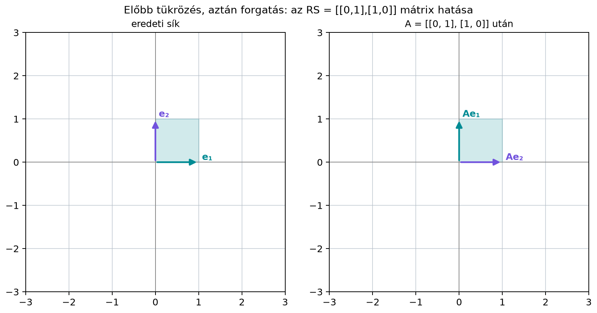

Az előző alfejezetben megismertük a mátrixszorzást, és láttuk, hogy az szorzat sokféleképpen értelmezhető: sor-oszlop skalárszorzatokként, oszlopok lineáris kombinációjaként, illetve transzformációk egymásutánjaként. Most azt járjuk körbe, milyen algebrai szabályokkal bánhatunk a mátrixszorzással.
Az iskolai számok világában megszoktuk, hogy a szorzás felcserélhető: . A mátrixoknál ez általában nem igaz. Ha például képfeldolgozásban először tükrözünk egy képet, utána elforgatjuk -kal, egészen más képet kapunk, mintha előbb forgatnánk, utána tükröznénk. A műveletek sorrendje tehát lényegi információt hordoz.
Ugyanakkor a zárójelezés – ha a sorrendet nem változtatjuk meg – sokkal szabadabb. Ez azért fontos, mert egy számítás költsége nagyon eltérhet az költségétől, bár az eredmény ugyanaz. Emellett egy elterjedt művelet, a transzponálás és a szorzás sorrendjének cseréje szintén szabályt követ, amelyet naponta használunk, amikor neurális hálók súlymátrixaival számolunk.
Vizsgáljuk meg a síkon az forgatást, amely az vektort az vektorba viszi, és az tükrözést, amely az -koordináta előjelét cseréli.
Először forgassunk, utána tükrözzünk. Az vektorból a forgatás -t csinál, a tükrözés pedig -t -re változtatja, tehát a végeredmény . Fordított sorrendben először tükrözünk: -ből marad, mert a tükrözés az -koordinátát nem bántja, majd a forgatás ezt -be viszi. A végeredmény . A két sorrend eredménye különbözik.

A számítás is megerősíti ezt. A két szorzat:
Az az -et -be, az pedig -be viszi. A két mátrix valóban nem egyenlő.
Először rögzítsük, hogy milyen méretű mátrixokat szorozhatunk össze, és milyen algebrai szabályok érvényesek.
Definíció. Legyen és . Akkor és csak akkor értelmezzük az szorzatot, ha . Ekkor , és elemei
A mátrixszorzás műveletére az alábbi szabályok teljesülnek, feltéve, hogy a szereplő méretek összeillenek.
A nem-kommutativitás azt jelenti, hogy általában . Ez még négyzetes mátrixoknál is így van, ahogy a forgatás-tükrözés példa mutatta. Téglalap alakú mátrixoknál gyakran az egyik szorzat értelmezhető, a másik nem. Ha például és , akkor mindkét irányú szorzat létezik, de , míg , tehát a méretük sem egyezik.
Definíció. Egy mátrix transzponáltja az az mátrix, amelynek eleme az eredeti mátrix eleme:
Szemléletesen a transzponálás sorokból oszlopokat csinál: az első sora az első oszlopa lesz, és így tovább.
Például
Vizsgáljuk meg a transzponálás és a szorzás kapcsolatát egy konkrét kis példán.
Legyen
Először számítsuk ki az szorzatot:
Ennek transzponáltja:
Most számítsuk ki a szorzatot. Először írjuk fel a transzponáltakat:
Ezek szorzata:
A két eredmény megegyezik: . Figyeljük meg a sorrendcserét: a szorzat transzponáltja a transzponáltak fordított sorrendben vett szorzata.
Állítás. Ha és , akkor
Bizonyítás. Ellenőrizzük, hogy a két oldal mérete egyezik. , így . A jobb oldalon és , tehát a szorzatuk szintén -es.
Most mutassuk meg, hogy a két mátrix eleme minden párra egyenlő. A definíció szerint
A jobb oldali szorzat eleme:
A két összeg ugyanaz, csak a tényezők sorrendje van felcserélve az egyes tagokban. Valós számok szorzása kommutatív, tehát minden -ra, így a két összeg egyenlő. Ezzel az állítást bebizonyítottuk.
Következmény. Tetszőleges mátrixra az szorzat létezik, mérete , és mindig szimmetrikus.
Definíció. Egy négyzetes mátrix szimmetrikus, ha , azaz minden -re.
Bizonyítás (következményhez). Az , ezért . Az előző állítás és a transzponálás kettőzöttje miatt
Itt használtuk, hogy bármely mátrix dupla transzponáltja visszaadja az eredeti mátrixot: . Mivel a mátrix megegyezik a saját transzponáltjával, szimmetrikus.
Az szimmetriája kulcsszerepet játszik majd a legkisebb négyzeteknél és a PCA-nál.
Az asszociativitás azt jelenti, hogy egy alakú kifejezésnél tetszőlegesen zárójelezhetünk, az eredmény ugyanaz lesz. Ezt elemenkénti számolással igazoljuk. A szorzat eleme definíció szerint
másrészt
A véges összegekben a két összegzési sorrend felcserélhető, ezért a két kifejezés minden párra egyenlő, vagyis . A disztributivitás ugyanígy, a szorzat definíciójából adódik:
Az asszociativitás azonban nem jelenti azt, hogy a különböző zárójelezések ugyanannyi műveletet igényelnek. Az egyenlőség egzakt algebrai értelemben értendő; lebegőpontos számításnál a zárójelezés a kerekítések sorrendjét is megváltoztatja, ezért az eredmény bitre eltérhet. Ellenőrzéshez toleranciát használjunk (16.2. alfejezet), és a kisebb műveletszám nem jelent automatikusan kisebb hibát.
Tekintsük az , , méretű mátrixokat. A szorzatnál először ki kell számítanunk az szorzatot, ami és méretű mátrix szorzata. Két és méretű mátrix szorzata skaláris szorzást igényel, tehát itt
szorzás kell, és az eredmény -ös. Ezt -vel szorozva újabb szorzás szükséges, így a út összesen szorzás.
Ezzel szemben az zárójelezésnél először -t számítjuk: szorzás, az eredmény -es. Ezt -val szorozva szorzás kell, így ez az út összesen szorzás. Az első zárójelezés tehát tízszer olcsóbb, bár egzakt algebrai értelemben az eredmény ugyanaz; lebegőpontosan a kerekítés sorrendje miatt a két eredmény bitre eltérhet.
Ennek gyakorlati következménye van a gépi tanulásban is. Ha egy vektorra két súlymátrixot alkalmazunk egymás után (nemlinearitás nélkül), a költség a méretektől függ. Legyen -s, -es, és tegyük fel, hogy darab -dimenziós bemenetre alkalmazzuk őket. Külön-külön a költség szorzás; előre összevonva kiszámítása , majd az összevont mátrix alkalmazása szorzás, összesen . Az összevonás tehát pontosan akkor éri meg, ha ; ez a dimenzióktól és -től egyaránt függ. Például , és esetén a külön alkalmazás szorzás, az összevonás szorzás, tehát már egyetlen bemenetnél is olcsóbb. A „sok vektor” nem szükséges feltétel. A sok mintát tartalmazó batch-et viszont egyetlen mátrixszorzásként számoljuk, ahogy azt a 19.2. alfejezetben (Batch-feldolgozás, shape-ek és broadcasting) részletezzük.
A mátrixszorzás speciális esetei közül kettőt érdemes kiemelni, mert a könyv későbbi fejezeteiben folyamatosan használjuk őket.
Skalárszorzat mátrixszorzatként. Ha , akkor egy sorvektor, egy oszlopvektor, így a szorzatuk -es mátrix, azaz skalár:
Ez pontosan A skalárszorzat: algebrai képlet és geometriai jelentés (4.1. alfejezetben) megismert művelet. A mátrixszorzás szabályai tehát magukba foglalják a skalárszorzatot, csak a jelölésben transzponált sorvektort szorzunk oszlopvektorral.
Külső szorzat. Ha megfordítjuk a szorzást, azaz oszlopvektort szorzunk egy sorvektorral, akkor -es mátrixot kapunk:
Ezt a szorzatot külső szorzatnak (outer product) nevezzük. Minden oszlopa skalárszorosa, minden sora skalárszorosa. Ha és nemnulla, a mátrix rangja pontosan ; ha bármelyikük nulla, a szorzat a zérusmátrix, amelynek rangja . Általában tehát a külső szorzat legfeljebb 1 rangú (a rang fogalmát a 8.3. alfejezet (Lépcsős alak, rang és a megoldások száma) vezeti be). A külső szorzat fontos lesz a visszaterjesztésnél és az alacsony rangú felbontásoknál (SVD, LoRA).
Legyen
A skalárszorzat:
A külső szorzat:
Figyeljük meg: ugyanaz a két vektor teljesen más objektumot ad attól függően, hogy milyen sorrendben és milyen alakban szorozzuk össze őket. Az egyetlen szám, az pedig egy -es mátrix.
A szimmetrikus mátrixok vizuálisan könnyen felismerhetők: a főátlóra tükrözve a mátrix önmagát adja. Például
szimmetrikus, mert , és . Az
nem szimmetrikus, mert , de .
A szimmetrikus mátrixok azért különlegesek, mert sajátértékeik valósak, és van ortonormált sajátbázisuk. Ezt A spektráltétel: szimmetrikus mátrixok ortogonális sajátbázisa (14.1. alfejezet) részletesen tárgyaljuk.
A következő kód a kézi példát reprodukálja, és ellenőrzi a transzponálási szabályt.
import numpy as np
A = np.array([[1, 2],
[3, 4]])
B = np.array([[2, 0],
[1, 3]])
AB = A @ B
print("AB =\n", AB)
print("(AB).T =\n", AB.T)
print("B.T @ A.T =\n", B.T @ A.T)
print("Megegyezik:", np.allclose(AB.T, B.T @ A.T))
a = np.array([1, 2])[:, None] # oszlopvektor (2, 1)
b = np.array([3, 4])[:, None] # oszlopvektor (2, 1)
print("Skalárszorzat a.T @ b =", a.T @ b)
print("Külső szorzat a @ b.T =\n", a @ b.T)
print("A.T @ A szimmetrikus?", np.allclose(A.T @ A, (A.T @ A).T))Várt kimenet:
AB =
[[ 4 6]
[10 12]]
(AB).T =
[[ 4 10]
[ 6 12]]
B.T @ A.T =
[[ 4 10]
[ 6 12]]
Megegyezik: True
Skalárszorzat a.T @ b = [[11]]
Külső szorzat a @ b.T =
[[3 4]
[6 8]]
A.T @ A szimmetrikus? TrueA transzponálási szabályt a neurális hálók kódjában gyakran kell alkalmazni, különösen a shape-ek egyeztetésénél. Tegyük fel, hogy egy dense réteg kimenete , ahol és . Ha egyszerre mintát dolgozunk fel, az adatmátrix , és a batch-kimenet
A transzponálás azért kerül ide, mert a matematikai konvencióban a súlymátrix a bemeneti vektort balról szorozza, míg az adatmátrixos alakban a minták sorokban állnak. Az szabály segít ellenőrizni, hogy a shape-ek helyesek: , , így a szorzat méretű, ahogy várjuk.
A skalárszorzat és a külső szorzat is alapvető a gépi tanulásban. A figyelemmechanizmusban a pontszámmátrix eleme a skalárszorzat, amely az . és a . token kapcsolatát méri; ezt A figyelemmechanizmus: Q, K, V és a skálázott skalárszorzat (22.2. alfejezetben) fejti ki. Külső szorzat pedig a visszaterjesztésnél jelenik meg: egy réteg súlymátrixának gradiense egyetlen mintára egy alakú külső szorzat, ahol a kimenet felől visszaérkező hibavektor (delta) (részletesen: Visszaterjesztés (backpropagation) mátrixalakban).
Hiba 1: helyett írása. A transzponálásnál a tényezők sorrendje megfordul. A helyes képlet . Nemcsak a mátrixokról, hanem a shape-ekről is meg lehet győződni: ha és , akkor az szorzat csak akkor értelmezhető, ha , ami általában nem teljesül.
Hiba 2: A mátrixszorzást kommutatívnak gondolni. Számoknál , de mátrixoknál a szorzat általában más. A forgatás és tükrözés példája mutatja, hogy a sorrend valódi különbséget jelent. Ha valamelyik szorzat nem is értelmezhető, az is erős jelzés.
Hiba 3: A Python * és @ művelet
összekeverése. A NumPy-ban a * elemenkénti
szorzást jelent, a mátrixszorzáshoz az @ operátort vagy a
np.matmul függvényt kell használni. Például
A * B elemenként szorozza össze az azonos pozíciójú
elemeket, míg A @ B a lineáris algebrai mátrixszorzást
végzi.
Hiba 4: Figyelmen kívül hagyni a zárójelezés költségét. Az asszociativitás azt mondja, hogy az eredmény azonos, de a végrehajtási idő nagyságrendekkel eltérhet. Nagy mátrixoknál mindig gondoljuk át, melyik zárójelezés csökkenti a közbülső eredmény méretét.
(a) Fogalmi kérdés. Igaz-e, hogy ha , akkor és szükségképpen négyzetes mátrix? Válaszodat indokold.
(b) Kézi számolás. Legyen
Számítsd ki az , , és mátrixokat. Melyik szorzat szimmetrikus?
(c) NumPy-feladat. Írj NumPy-kódot, amely a (b) feladat mátrixaival ellenőrzi: , szimmetrikus, és . A kód írja ki a mátrixokat és az állítások igazságértékét.
(d) Gondolkodtató feladat. Adott . Igaz-e, hogy mindig szimmetrikus? Igaz-e, hogy és szimmetrikus? Vizsgáld meg az példán.
(a) Igen, igaz. Ha és , akkor az szorzat létezéséhez kell, a létezéséhez pedig . Ha mindkét szorzat létezik, az csak annyit jelent, hogy és , tehát és . Ekkor és . Ha , akkor a két szorzat mérete eltérő, tehát nem lehetnek egyenlők. Ha , mindkét mátrix négyzetes. Tehát ahhoz, hogy a szorzatok egyenlők legyenek, mindkét mátrixnak négyzetesnek (sőt azonos, -es méretűnek) kell lennie. Ez persze csak szükséges feltétel: négyzetes mátrixokra is általában .
(b)
Látható, hogy , hiszen például a elemek és . A transzponált:
Ez nem szimmetrikus, és a sem az. Ha viszont lenne, akkor és mindig szimmetrikusak lennének; éppen ezért választottunk ettől eltérő -t. Ellenőrizzük a transzponálási szabályt is:
Valóban megegyezik -tal.
(c) Példakód:
import numpy as np
A = np.array([[1, 0],
[2, 1]])
B = np.array([[1, 2],
[3, 1]])
print("AB =\n", A @ B)
print("BA =\n", B @ A)
print("(AB).T == B.T @ A.T:", np.allclose((A @ B).T, B.T @ A.T))
print("A.T @ A szimmetrikus:", np.allclose(A.T @ A, (A.T @ A).T))
print("AB != BA:", not np.allclose(A @ B, B @ A))Várt kimenet:
AB =
[[1 2]
[5 5]]
BA =
[[5 2]
[5 1]]
(AB).T == B.T @ A.T: True
A.T @ A szimmetrikus: True
AB != BA: True(d) Igen, mindig szimmetrikus. Ugyanis
Az és mindig szimmetrikusak, ugyanazzal a levezetéssel, amellyel az esetében láttuk: . Figyeljük meg, hogy a két szorzat általában különböző mátrix. A megadott -val:
ami szimmetrikus. Továbbá
mindkettő szimmetrikus.
A mátrixszorzás asszociatív és disztributív, de általában nem kommutatív: a tényezők sorrendje lényegi, mert a transzformációk egymásutánja nem cserélhető fel. A zárójelezés egzakt algebrai értelemben nem változtatja meg az eredményt, de a számítási költséget nagyon is befolyásolja; lebegőpontosan a kerekítési sorrend miatt az eredmény bitre eltérhet, ezért toleranciával ellenőrizzünk (16.2. alfejezet). A transzponálás definíciója , és a szorzat transzponáltjára a sorrend megfordul: . Ebből következik, hogy mindig szimmetrikus. A skalárszorzat és a külső szorzat ugyanazon vektorok két különböző mátrixművelete, amelyeket a későbbi fejezetekben gyakran használunk.